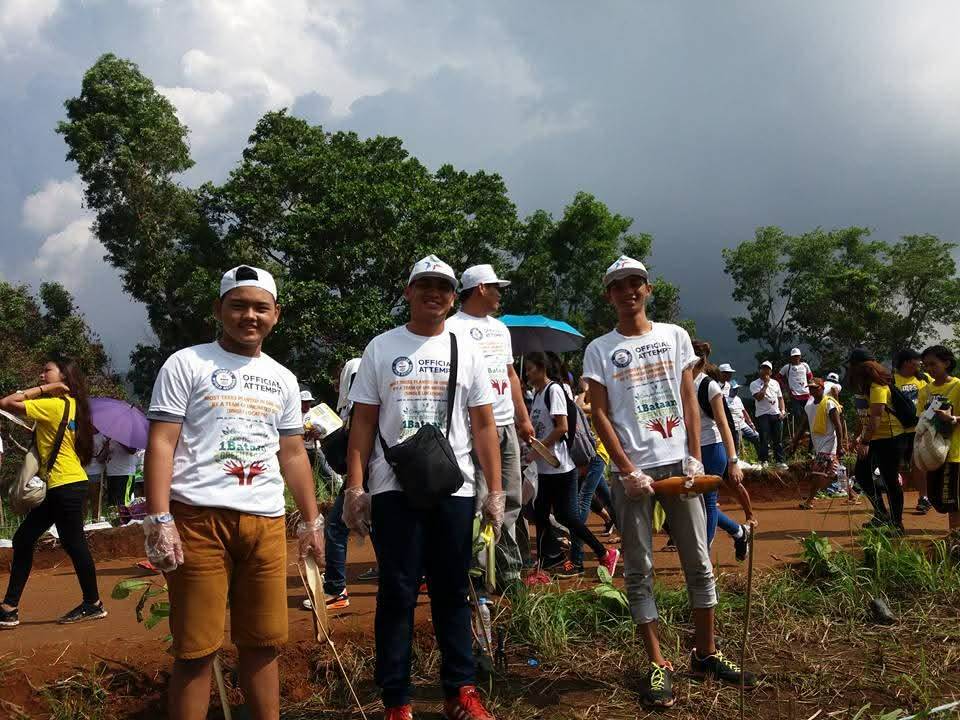
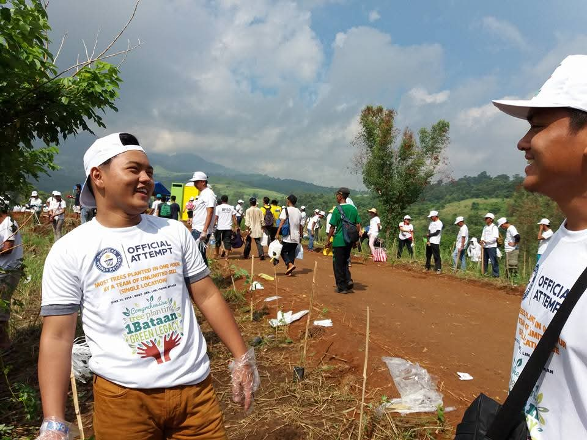
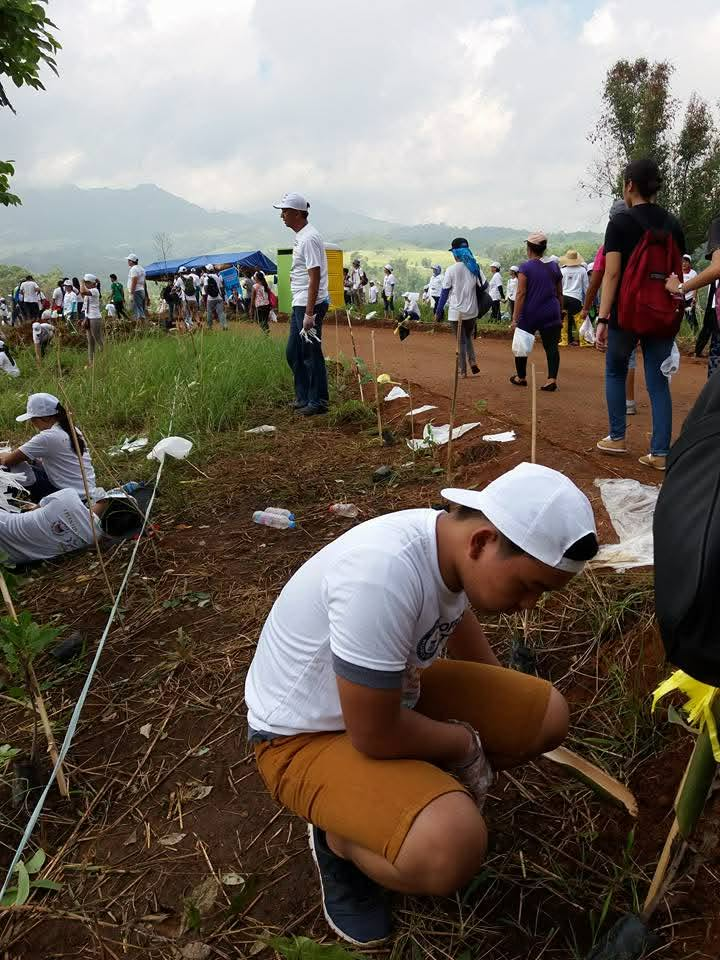

Reflections · Leadership & Development · Case
Planting for Bataan's Green Legacy
Participation in the 2016 1Bataan Green Legacy Tree Planting Program, where thousands of people gathered in Orion for a mass environmental action that set a Guinness World Records title at the time.
Engagement record
The experience at a glance.
- Engagement
- 1Bataan Green Legacy Tree Planting Program
- Role
- Participant in the official record attempt
- Date
- June 25, 2016
- Location
- Barangay General Lim, Orion, Bataan
- Scale
- About 18,000 students, volunteers, professionals, employees, and citizens
- Record
- 223,393 trees planted in one hour at a single location, as reported by SunStar in 2016
- Setting
- 200-hectare community-based forest management area
- Focus
- Reforestation, environmental stewardship, climate action, and support for local tree crops
A collective environmental action
The scale of the event turned individual planting into a province-wide act of participation.
The 1Bataan Green Legacy Tree Planting Program brought together thousands of participants in Barangay General Lim, Orion. The activity combined an environmental objective with a large public attempt to plant as many trees as possible within one hour.
Contemporary coverage reported that 223,393 trees were planted during the attempt. Guinness World Records certification was awarded after the event, making the activity a record-setting environmental action at that time.
Documentary record
Participation on the planting site.
Photographs from the official tree-planting attempt in Orion, Bataan.



Why the scale mattered
Environmental stewardship was made visible through coordinated public participation.
The record attempt depended on a large number of people acting within the same place and time window. Students, volunteers, workers, professionals, and other citizens became part of one coordinated planting effort.
The event linked environmental responsibility with collective action. The trees included fruit-bearing and fuelwood species intended to contribute to local production and longer-term environmental protection.
Historical record
The Guinness distinction belongs to the event's 2016 context.
SunStar reported on July 2, 2016 that Bataan had broken the then-existing Guinness World Records mark for the most trees planted in one hour by a team of unlimited size at a single location.
This page treats the distinction as part of the event's historical record, rather than as a claim that Bataan continues to hold the current record.
Contemporary coverage
Read the 2016 SunStar report on the record-setting event.
The report documents the date, location, scale of participation, reported tree count, and Guinness certification.
Read SunStar coverage ↗Leadership & Development
Return to the leadership record.
Explore the experiences where participation, responsibility, service, and collective action shaped how leadership was understood in practice.
Leadership & Development →